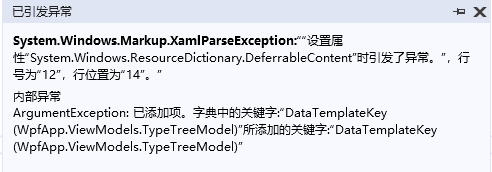
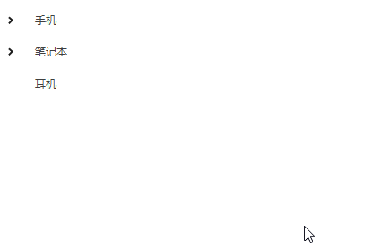
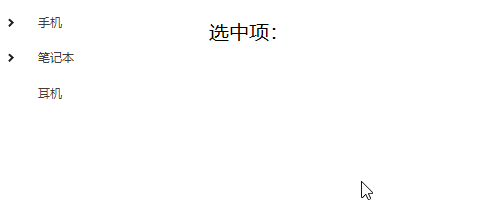

Treeview分别有两个数据模板HierarchicalDataTemplate(层级数据模板)和DataTemplate(数据模板),分别应用于生成子数据项和普通数据项。
在使用过程中，如果对两个模板的DataType设置为同一类型，运行时会直接报错。

大概原因是添加了俩个相同Key的资源(因为HierarchicalDataTemplate和DataTemplate都是定义在<TreeView.Resources>标签中)。
代码：
public class TypeTreeModel :TypeModel
{
public ObservableCollection<TypeTreeModel> ChildList { get; set; }
= new ObservableCollection<TypeTreeModel>();
}
public class TypeModel
{
public int Id { get; set; }
public string Name { get; set; }
}
<TreeView x:Name="treeView" ItemsSource="{Binding TypeList}" MinWidth="200" MaxHeight="200" >
<TreeView.Resources>
<HierarchicalDataTemplate DataType="{x:Type vm:TypeTreeModel}" ItemsSource="{Binding ChildList}">
<TextBlock Text="{Binding Name}" Margin="3 2"/>
</HierarchicalDataTemplate>
<DataTemplate DataType="{x:Type vm:TypeModel}">
<TextBlock Text="{Binding Name}" ToolTip="{Binding Id}" Margin="3 2"></TextBlock>
</DataTemplate>
</TreeView.Resources>
</TreeView>效果图：

TypeList一般都是数据库取出来的数据处理嵌套后的结果。有时候会遇到需求，对于不同的分类有不同的类型。根据双向绑定的规则，我们只需要修改ViewModel中TypeList的内容就可以了。
注意: ObservableCollection只有在列表项发生变化时才会触发页面刷新，即新增或删除时才会反应到页面上。若采用直接赋值的写法，不会触发页面刷新。
推荐更新数据时候的写法：
//清空原先的列表
TypeList.Clear();
list.ForEach(d =>
{
TypeList.Add(d);
});
TreeView.SelectedItem是ReadOnly的，所以不能通过简单的绑定方法去获取选中项
最终还是要通过绑定Treeview的SelectedItemChanged事件，来修改ViewModel中的数据
1.直接绑定事件
<TreeView ItemsSource="{Binding TypeList}" SelectedItemChanged="TreeView_OnSelectedItemChanged" />
private void TreeView_OnSelectedItemChanged(object sender, RoutedPropertyChangedEventArgs<object> e)
{
vm.SelectItem = (Cluster)e.NewValue;
}2.通过Command绑定事件
System.Windows.Interactivity.WPF(简单来说该插件可以将页面控件的Event转为ViewModel中的Command)xmlns:i="clr-namespace:System.Windows.Interactivity;assembly=System.Windows.Interactivity"Command到SelectedItemChanged事件<TreeView x:Name="treeView" ItemsSource="{Binding TypeList}">
<i:Interaction.Triggers>
<i:EventTrigger EventName="SelectedItemChanged">
<i:InvokeCommandAction Command="{Binding SelectItemChangeCommand}"
CommandParameter="{Binding ElementName=treeView,Path=SelectedItem}"/>
</i:EventTrigger>
</i:Interaction.Triggers>
</TreeView>ViewModel:
public class TreeViewModel : ViewModelBase
{
public ObservableCollection<TypeTreeModel> TypeList;
private TypeModel selectItem;
public TypeModel SelectItem
{
get { return selectItem; }
set { this.MutateVerbose(ref selectItem, value, RaisePropertyChanged()); }
}
public TreeViewModel()
{
TypeList = GetData();
}
public ICommand SelectItemChangeCommand
{
get
{
return new CommandBase((param) =>
{
if(param != null)
SelectItem = (TypeModel)param;
});
}
}
}效果图：

ViewModelBase和CommandBase是自己封装的基类，就是为了写WPF的双向绑定简单点，有兴趣的可以评论向我要。
Demo地址： https://github.com/fxhui/TreeViewDemo